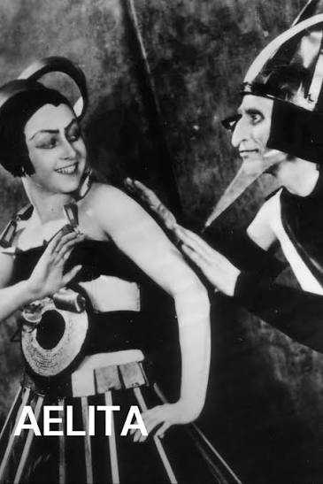
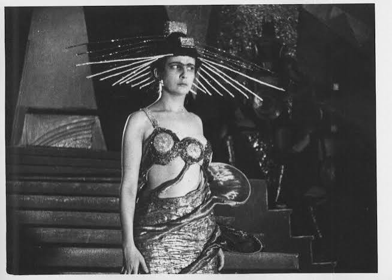
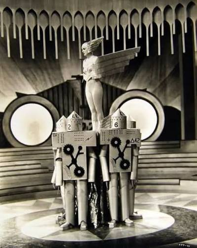

Graphic Novel · Soviet Science Fiction · Futurism
Aelita
A. N. Tolstoy's novel Aelita (The Decline of Mars, 1922–1923) stands as one of the most significant Soviet productions of the period. In 1924 it was adapted for the screen by Ja. A. Protazanov, one of the founders of Russian cinema and among the most important directors of the pre-revolutionary era. This science-fiction comedy tells of a fantastic voyage to Mars, the protagonist's love affair with the beautiful Martian Aelita — the dictator's daughter — and of the failed attempt to organize a socialist revolution on the planet. The revolution fails, but the love is eternal.
In Tolstoy (no relation to the celebrated Lev Tolstoy), the story serves as a stage for exporting the October Revolution into space, through the engineer Los′ and the soldier Gusev. This ideological-literary vision (the group LEF founded by Majakovskij), blending politics and science fiction, would lend itself to comic satire many decades later—as seen in the series Fascisti su Marte by Corrado Guzzanti and Igor Skofic, in which the Red Planet is targeted for conquest by an intrepid and surreal band led by Guzzanti.
THE FILM — PROTAZANOV, 1924
Aelita — queen of Mars. Headdress by Aleksandra Ekster.
Constructivist choreography — biomechanical acting after Meyerhold.
Hierarchical machine — set design influenced by Malevich and Suprematism.Some stills from Protazanov's film, recalling the mechanical figures of Fernand Léger and the masks of Italian Futurist theatre. The two actors' movement is explicitly choreographed according to biomechanical principles: not human interaction, but interlocking gears. In the background, constructivist curved forms create a space that is neither urban nor natural — an ideological space. Metropolis, the film Fritz Lang will mimics the female robotic movement, replacing an actual robot. The female body is not sensual but mechanical, an ennobled cog. The geometric shapes behind — angular planes, stepped levels — are set designs by Isaac Rabinovich, influenced by Malevich and Suprematism.
GRAPHIC NOVEL — COMPARISON WITH THE FILMThe generated images follow faithfully the sequence of key scenes that Protazanov stages in the film: Los′'s astronomical observatory (image 1, corresponding to the scene in which Los′ studies star charts), the rocket launch greeted by the crowd (image 6), the encounter with Aelita (images 2–3), the workers' uprising led by Gusev (image 7), the final battle (image 4). The appearance of Los′'s wife Katja (image 5) also reprises a narrative device present in the film — Los′'s earthly guilt continuing to haunt him on Mars.
The generated images do the exact opposite: they aim for cinematic photorealism — dramatic prestige-TV lighting, individuated faces, skin and fabric textures — and locate otherness not in form but in biological colour: the blue skin of the Martians. In Protazanov's film, Aelita and the Martians are humans in costume — because the ideological point was precisely that Mars should be a mirror of Earth, not an alien ecology. The blue skin of the generated images (2, 3, 4, 7) does not come from Tolstoy or Protazanov: it comes from the cinematic vocabulary developed afterwards, between Avatar, Star Trek and Guardians of the Galaxy. The AI, trained on decades of subsequent science-fiction imagery, retroprojects onto Aelita a chromatic code the original text did not anticipate — and in doing so biologises a metaphor that in 1924 was purely political.
Image 7 is the one that comes closest, paradoxically, to the authentic historical aesthetic — not so much to the film as to Soviet agitprop posters (Rodchenko, Klutsis): the raised fist, the banner bearing the leader's name, the pyramidal composition of the speaker towering over the crowd. Here the AI has drawn, perhaps unconsciously, on an authentic iconographic repertoire of the period, closer to political photomontage than to blockbuster science fiction. In image 6, the rocket bearing the red Soviet star takes off from a wooden barn in American rural style — a detail that betrays the statistical composition of the training datasets, dominated by North American agricultural imagery even when the scene calls for a Russian setting.
▶ PLAY GRAPHIC NOVEL